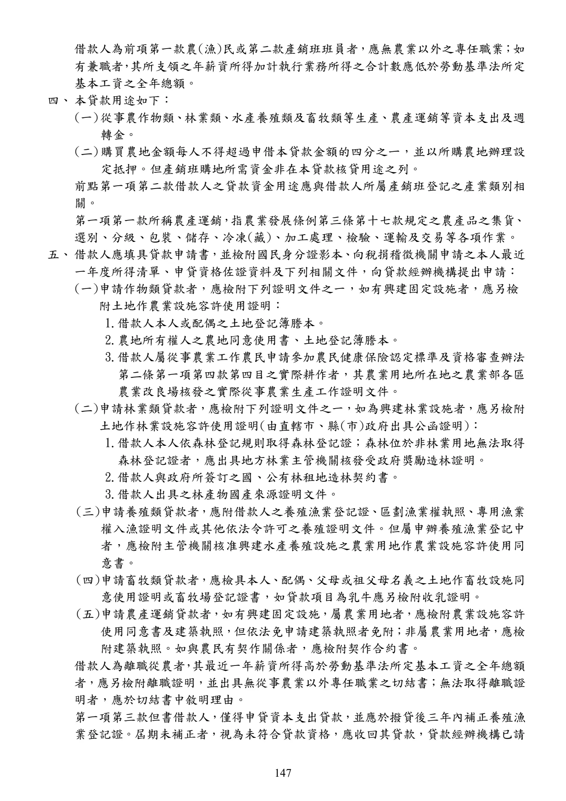

農民經營及產銷班貸款
手冊頁：147 PDF頁：149／359
{kind=link}

展開查看PDF原始文字層
複雜表格欄列可能因文字層順序失真，請搭配原頁預覽查閱。
借款人為前項第一款農(漁)民或第二款產銷班班員者 ， 應無農業以外之專任職業 ； 如
有兼職者 ， 其所支領之年薪資所得加計執行業務所得之合計數應低於勞動基準法所定
基本工資之全年總額。
四、 本貸款用途如下：
(一) 從事農作物類、 林業類 、 水產養殖類及畜牧類等生產 、農產運銷等資本支出及週
轉金。
(二) 購買農地金額每人不得超過申借本貸款金額的四分之ㄧ，並以所購農地辦理設
定抵押。但產銷班購地所需資金非在本貸款核貸用途之列。
前點第一項第二款借款人之貸款資金用途應與借款人所屬產銷班登記之產業類別相
關。
第一項第一款所稱農產運銷 ， 指農業發展條例第三條第十七款規定之農產品之集貨 、
選別、分級、包裝、儲存、冷凍(藏)、加工處理、檢驗、運輸及交易等各項作業。
五、 借款人應填具貸款申請書 ， 並檢附國民身分證影本 、 向稅捐稽徵機關申請之本人最近
一年度所得清單、申貸資格佐證資料及下列相關文件，向貸款經辦機構提出申請：
(一)申請作物類貸款者，應檢附下列證明文件之一，如有興建固定設施者，應另檢
附土地作農業設施容許使用證明：
1.借款人本人或配偶之土地登記簿謄本。
2.農地所有權人之農地同意使用書、土地登記簿謄本。
3.借款人屬從事農業工作農民申請參加農民健康保險認定標準及資格審查辦法
第二條第一項第四款第四目之實際耕作者，其農業用地所在地之農業部各區
農業改良場核發之實際從事農業生產工作證明文件。
(二)申請林業類貸款者，應檢附下列證明文件之一，如為興建林業設施者，應另檢附
土地作林業設施容許使用證明(由直轄市、縣(市)政府出具公函證明)：
1.借款人本人依森林登記規則取得森林登記證；森林位於非林業用地無法取得
森林登記證者，應出具地方林業主管機關核發受政府獎勵造林證明。
2.借款人與政府所簽訂之國、公有林租地造林契約書。
3.借款人出具之林產物國產來源證明文件。
(三)申請養殖類貸款者 ， 應附借款人之養殖漁業登記證、 區劃漁業權執照 、專用漁業
權入漁證明文件或其他依法令許可之養殖證明文件。但屬申辦養殖漁業登記中
者，應檢附主管機關核准興建水產養殖設施之農業用地作農業設施容許使用同
意書。
(四)申請畜牧類貸款者 ， 應檢具本人 、配偶 、 父母或祖父母名義之土地作畜牧設施同
意使用證明或畜牧場登記證書，如貸款項目為乳牛應另檢附收乳證明。
(五)申請農產運銷貸款者 ，如有興建固定設施 ，屬農業用地者， 應檢附農業設施容許
使用同意書及建築執照 ， 但依法免申請建築執照者免附； 非屬農業用地者 ，應檢
附建築執照。如與農民有契作關係者，應檢附契作合約書。
借款人為離職從農者 ， 其最近一年薪資所得高於勞動基準法所定基本工資之全年總額
者，應另檢附離職證明，並出具無從事農業以外專任職業之切結書；無法取得離職證
明者，應於切結書中敘明理由。
第一項第三款但書借款人 ， 僅得申貸資本支出貸款 ， 並應於撥貸後三年內補正養殖漁
業登記證。屆期未補正者，視為未符合貸款資格，應收回其貸款，貸款經辦機構已請